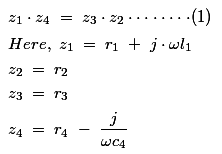
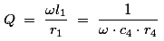
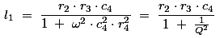
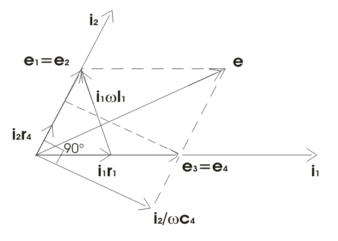

Hay's Bridge Theory
Advantages of Hay's Bridge
Disadvantages of Hay's Bridge
Hay's Bridge Applications
Before we introduce Hay's bridge let us recall the limitations of Maxwell bridge, in order to understand what is the necessity of Hay's bridge applications. Maxwell bridge is only suitable for measuring medium quality factor coils however it is not suitable for measuring high quality factor (Q > 10). In order to to overcome from this limitation we need to do modification in Maxwell bridge so that it will become suitable for measuring Q factor over a wide range. This modified Maxwell bridge is known as Hay's bridge.
Hay's Bridge Theory
As I said earlier that Hay's bridge is modified Maxwell bridge, now question arises here in our mind that where we
need to do modification. In order to to understand this, let us consider the connection diagram given below:

Hay's Bridge Circuit
In this bridge the electrical resistance is connected in series with the standard capacitor. Here l1 is unknown inductor connected in series with resistance r1. c4 is standard capacitor and r2, r3, r4 are pure electrical resistance forming other arms of the bridge.
From the theory of ac bridge we can write at balance point,

Substituting the values of z1, z2, z3 and z4 in equation (1) we get,

Now, Q factor of a coil is given by

The equations (4) and (5) are dependent on the source frequency hence, in order to find the accurate value of l1 and r1 we should know the correct value of source frequency.
Let us rewrite the expression for l1,

Now if we substitute Q >10 then 1/Q2 = 1 / 100 and hence we can neglect this value, thus neglecting 1/Q2 we get r2r3c4 which is same as we have obtained in Maxwell bridge hence Hay's bridge circuit is most suitable for high inductor measurement.
Let us know more about Hay's bridge circuit diagram of Hay's bridge that will be very useful in understanding the Hay's bridge phasor diagram. A meter is connected between points b and d of the bridge. The arm ab consists of resistance r1 and inductor, l1 (total drop across this is e1) and arm ad consists of pure
resistance r2 (total drop across this is e2). The arm bc consists of pure resistance making a drop of e3 while the arm cd consists of resistor r4 and a capacitor making the total drop of e4. Now let us draw phasor diagram of Hay's bridge, at null point e1 must be equal to e2 and also e3 must be equal to e4 as the electric current flow through bd is zero. Let us take i1 as the reference axis and thus electric current i2 leads by i1 by some angle (as shown in Hay's bridge phasor diagram below) because a capacitor is connected in branch cd making electric current i2 lead by i1. Let us mark e1 and e2 and the resultant of e1 and e2 of course equal to e. The phase difference between the voltage drop across the electrical resistance r4 and capacitor c4 is 90° (measured in degrees) is clearly shown in the phasor diagram of Hay's Bridge.

In many practical situations bridge circuit that uses ac source, an electron ray indicating is utilized to find out the balance condition by opening and closing the shadow area of the tube. For audible balance headsets are used , but accuracy is reduces due to this method. In order to control the operating power to the bridge and to complete the
detector circuit various switches are used. Many times the two switching functions are merge into single key, known bridge key this is to ensure that power applied to the bridge before to the detector circuit, due this sequence the effect of inductor and capacitance is reduced.
Advantages of Hay's Bridge
(1) The bridge gives very simple expression for the calculation of unknown inductor of high value. The Hay's bridge require low value of r4 while Maxwell bridge requires high value of r4. Now let us analyse why should put low value of r4 in this bridge:
Consider the expression of quality factor,

As r4 presents in the denominator hence for high quality factor, r4 must be small.
Disadvantages of Hay's Bridge
Hay's bridge is not suitable for measurement of quality factor (Q<10) for Q<10 we should use Maxwell bridge.
 by
by